Compression turns digital data into other, usually smaller, equivalent digital data. It's "equivalent" in that you can convert the smaller data back to the original via an associated decompression.
The exact methods of compression are diverse and elaborate, but they all somehow find patterns in uncompressed data, and take those patterns as opportunities to abbreviate the data. So long as patterns exist in a file, easy enough to describe and repetitious enough to exploit, there will exist a more concise way to express that file. The ideal compressor would leave no clear patterns in its output.
Battelle's CantorDust program gives us a neat way to see the character of an arbitrary file. Since the program applies equally well to an original file or a compressed version, we can get a visual intuition for what a compression algorithm does to a file.
My computer has a 1.2 MB ELF executable at /bin/bash, which my CantorDust clone shows as follows:
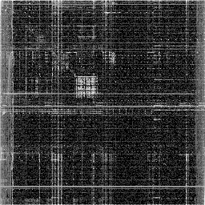
We see rough squares across the ASCII capital and lowercase letters, dull stripes on the left and right, and numerous vertical and horizontal lines, some solid, most dotted.
Except for the letter blocks, those are typical features of x86-64 machine code.
On the one hand, this lets us infer what kind of file we're looking at, even when the Magical file program fails.
On the other hand, these are patterns which imply inefficiency.
gzip is a common compressor on Unix-based systems, of .tar.gz fame.
After gzip level 1 of 9, /bin/bash looks like this:
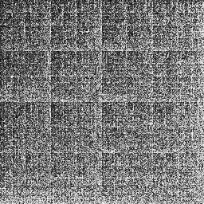
The picture looks more like white noise. Trends are less distinctive, but there's more white in the lower right, and more black in the upper left, with faint lines at every eighth subdivision, vertically and horizontally. If we turn it up to level 9, it gets just a tad more uniform:
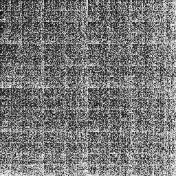
ZIP is the more common compressor for Windows. How well does default ZIP do at level 1?
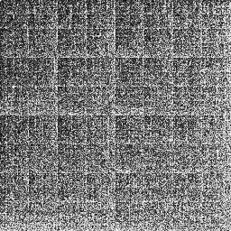
It looks a lot like gzip. This makes sense, as gzip and ZIP both use an algorithm called DEFLATE.
bzip2 is another common compression format, which likewise has levels 1 thru 9. Already at level 1, vertical and horizontal lines are much fainter than from DEFLATE, but we see some diagonal lines:
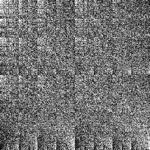
Level 9 blurs away some of those lines:
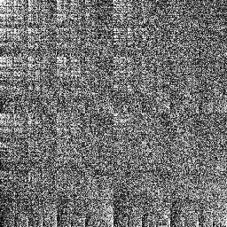
xz is good enough for the Linux source code. It's also good enough for a smooth CantorDust visual:
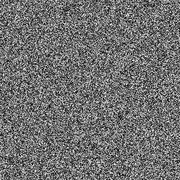
That's level 9. xz level 0 is almost as noisy.
What about zstd?
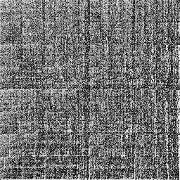
Lots of faint lines and stripes. Turn it up to level 19, and all that fades to noise:
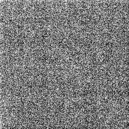
What about brotli? A lot like zstd.
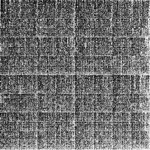
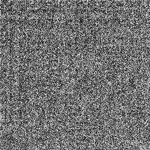